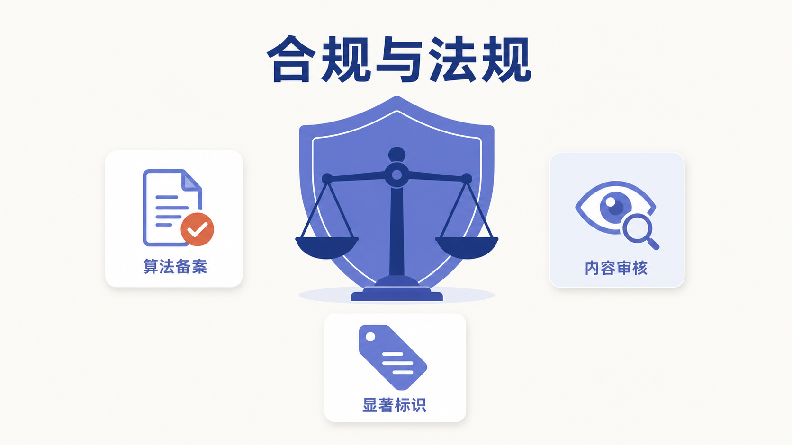

附录 A
AIGC 合规与法规
一、引言：为什么普通人也要懂一点 AIGC 法规
很多人第一次用 AIGC，最直接的感受是"好用、神奇、停不下来"。但只要稍微多走几步，比如把一份客户名单喂给 AI 让它整理、把公司内部代码贴进去让它排错、或者用 AI 换脸做一段搞笑视频，问题就来了：这样做合法吗？出了事谁负责？
中国并不是没有规则。恰恰相反，从 2017 年的《网络安全法》开始，国家已经围绕"网络、数据、个人信息、算法、生成式 AI、深度合成"织出了一张层次分明的监管网。这张网的核心思路只有一句话：既要发展，也要安全；既要创新，也要负责。
本附录不打算把所有条文背一遍，而是把和普通人、企业最相关的几部法规拎出来，讲清楚三件事：哪部法管什么事、关键义务是什么、落到日常使用上你应该怎么做。所有法规名称、施行日期和核心条款主旨，均依据国家网信办（cac.gov.cn）等官方渠道公开原文核实，不杜撰条文号。

二、核心法规速览：五部法规撑起的合规框架
AIGC 不是"法外之地"。围绕它的监管可以分成两层：一层是基础性的"数据三法"，另一层是专门针对算法和生成式 AI 的部门规章。下面这五部（类）法规，是最常被引用的合规依据。
flowchart TB
L1[网络安全法 2017] --> A[网络运行安全与信息安全基础]
L2[数据安全法 2021.9.1] --> B[数据分级分类与重要数据保护]
L3[个人信息保护法 2021.11.1] --> C[个人信息处理原则与敏感信息]
L4[深度合成管理规定 2023.1.10] --> D[深度合成内容显著标识]
L5[生成式AI暂行办法 2023.8.15] --> E[生成式AI全链条管理]
A --> F[AIGC合规框架]
B --> F
C --> F
D --> F
E --> F（一）《生成式人工智能服务管理暂行办法》：AIGC 的"基本法"
这是目前中国层级最高、专门针对生成式 AI 的部门规章，由国家网信办、国家发改委、教育部、科技部、工信部、公安部、广电总局七部门联合公布，2023 年 8 月 15 日施行（据 国家网信办官方全文、七部门联合公布消息）。
它的核心制度可以浓缩成五个关键词：
- 算法备案：具有舆论属性或社会动员能力的生成式 AI 服务，须按《互联网信息服务深度合成管理规定》履行算法备案程序，并按规定开展安全评估。截至 2026 年初，国家网信办已分多批发布生成式 AI 服务备案信息（据 网信办备案公告 等）。
- 训练数据合法：使用预训练、优化训练数据，应当使用"具有合法来源的数据和基础模型"，不得侵害他人知识产权，涉及个人信息的要取得同意。
- 内容审核：服务提供者承担生成内容的"网络信息内容生产者"责任，履行个人信息保护义务。
- 用户实名：要求用户提供真实身份信息。
- 生成内容标识：应当按照《互联网信息服务深度合成管理规定》对 AI 生成的图片、视频等内容进行标识。
这部办法的"暂行"二字很关键：它意味着规则还在迭代。普通人不需要背条文，但要记住一个判断标准——凡是面向公众提供服务、具有舆论属性的生成式 AI，都要走备案和标识这一套。
（二）《数据安全法》：数据分级分类是第一道关
《中华人民共和国数据安全法》自 2021 年 9 月 1 日施行。它最重要的制度是数据分类分级保护：国家建立数据分类分级保护制度，根据数据的重要程度以及一旦泄露造成的危害程度，对数据实行分类分级保护；各地区、各部门确定本地区、本部门重要数据具体目录，对列入目录的数据重点保护（据 《数据安全法》全文、第二十一条解读）。
对企业和个人而言，最直接的义务有两个：一是重要数据出境要做安全评估；二是开展数据处理活动要建立健全全流程数据安全管理制度。配套的国家标准《数据安全技术 数据分类分级规则》（GB/T 43697-2024）给出了具体操作指引（据 全国信安标委文件）。
（三）《个人信息保护法》：处理个人信息必须有合法依据
《中华人民共和国个人信息保护法》自 2021 年 11 月 1 日施行（据 国家网信办全文）。它确立了处理个人信息的几条铁律：
- 合法、正当、必要和诚信原则，采取对个人权益影响最小的方式。
- 告知同意：处理个人信息前，应当以显著方式、清晰易懂的语言真实、准确、完整地告知处理者名称、联系方式、处理目的、方式、种类、保存期限、个人行使权利的方式和程序；取得个人的同意，同意应当在充分知情的前提下自愿、明确作出。
- 敏感个人信息更严格：处理生物识别、宗教信仰、特定身份、医疗健康、金融账户、行踪轨迹等信息，以及不满十四周岁未成年人信息，只有在具有特定目的和充分必要性、并采取严格保护措施的情形下方可处理，且须取得单独同意。
把这条规定放回 AIGC 场景，结论很朴素：凡是包含他人身份证号、手机号、病历、人脸等敏感信息的素材，不要直接喂给公网 AIGC 工具。
（四）《互联网信息服务深度合成管理规定》：AI 换脸换声的"紧箍咒"
这是中国首部深度合成领域的专门法规，由网信办、工信部、公安部联合发布，2023 年 1 月 10 日施行（据 网信办官方全文、公安部全文）。
它最重要的义务是显著标识：深度合成服务提供者对使用其服务生成或编辑的信息内容，应当采取技术措施添加不影响用户使用的标识；提供智能对话、合成人声、人脸生成、沉浸式拟真场景等服务的，应当进行显著标识，使公众能够识别该内容为深度合成技术生成。同时，具有舆论属性或社会动员能力的深度合成服务提供者须进行算法备案。
重要提示：该规定还明确，深度合成服务提供者和使用者不得利用深度合成服务制作、复制、发布、传播虚假新闻信息。这意味着用 AI 生成"假新闻"不只是道德问题，更是违法行为。
（五）《网络安全法》：地基之上的地基
《中华人民共和国网络安全法》自 2017 年 6 月 1 日施行，是上述所有规章的上位法依据。《生成式人工智能服务管理暂行办法》第一条就开宗明义：根据《网络安全法》《数据安全法》《个人信息保护法》等法律制定。
它对普通人最相关的两点是：一是网络运营者收集使用个人信息应当遵循合法、正当、必要的原则，公开收集使用规则，明示目的方式和范围，并取得被收集者同意；二是任何个人和组织不得从事非法侵入他人网络、干扰他人网络正常功能、窃取网络数据等危害网络安全的活动。
三、五部法规对照表：一眼看清谁管什么
| 法规名称 | 施行日期 | 主管部门 | 核心制度主旨 |
|---|---|---|---|
| 《网络安全法》 | 2017.6.1 | 国家网信办等 | 网络运行安全、信息安全、个人信息收集基本规则 |
| 《数据安全法》 | 2021.9.1 | 国家网信办、各行业主管部门 | 数据分级分类、重要数据保护、出境安全评估 |
| 《个人信息保护法》 | 2021.11.1 | 国家网信办 | 告知同意、最小必要、敏感个人信息单独同意 |
| 《深度合成管理规定》 | 2023.1.10 | 网信办、工信部、公安部 | 深度合成内容显著标识、算法备案 |
| 《生成式 AI 暂行办法》 | 2023.8.15 | 网信办等七部门 | 算法备案、训练数据合法、内容审核、实名、标识 |
说明：以上日期与主管部门均依据官方原文核实。具体条款的适用与解释，以官方公布版本为准。
四、实践指引：普通人/企业使用 AIGC 的合规清单
法规读起来抽象，落地却非常具体。下面这份清单把五部法规的要求，拆解成普通人和企业都能照做的操作项。建议在每次使用 AIGC 前，对照打勾。
个人用户清单
- 不输入敏感个人信息：他人的身份证号、手机号、银行卡号、病历、人脸照片等，脱敏后再使用，或干脆不输入。
- 不输入商业秘密与未公开信息：公司源代码、客户名单、未公开财务数据，不要直接贴给公网 AIGC 工具。
- 使用前看一眼服务协议：确认该工具是否声明会用你的输入做训练，是否有数据保留期限。
- AI 生成内容要标注：在对外发布 AI 生成的图片、视频、文章时，主动注明"AI 辅助生成"或按平台要求打标识。
- 不传播 AI 生成的虚假信息：尤其是涉及时政、突发事件、公共人物的"新闻"，发布前核实信源。
- 核实信息真伪：AI 给出的法规条文号、日期、数据，使用前用权威渠道二次核对（这一条很重要，AI 幻觉会编出看起来很像真的条文号）。
企业与机构清单
- 建立 AIGC 使用制度：明确哪些岗位可以用、可以用到什么程度、用什么工具，签署员工使用规范。
- 优先选择已备案模型：面向公众提供服务时，核实所使用的生成式 AI 是否已完成网信办备案，并在显著位置公示备案信息。
- 数据分级分类后再决定能否上 AI：按《数据安全法》和国家标准 GB/T 43697-2024 对数据分级，重要数据和敏感个人信息不得直接输入公网 AIGC。
- 涉密或核心业务走私有化部署：对数据安全要求高的场景（政务内网、金融核心、医疗影像等），选择私有化部署或开源模型本地部署。
- 生成内容纳入内容审核流程：AI 生成的对外内容，须经人工复核与平台既有审核流程，不能"AI 写完直接发"。
- 履行算法备案与标识义务：自研或对外提供生成式 AI 服务的，按规定履行算法备案和安全评估；对生成的图片、视频、音频按规定进行显著标识。
- 数据出境先评估：涉及重要数据出境、或大规模个人信息出境的，按《数据出境安全评估办法》申报评估，或按《个人信息出境标准合同办法》签订标准合同。
五、本附录小结
合规不是"限制创新"，而是"让创新可持续"。把这一附录读完，你至少应该建立三层认知：
第一层，中国 AIGC 监管已经形成"网络安全法—数据安全法—个人信息保护法—深度合成规定—生成式 AI 办法"的完整链条，五部法规各管一段，共同构成合规框架。
第二层，普通人最容易踩的坑，不是"违法"，而是"无知"——把客户名单喂给公网 AI、把 AI 编造的法规号写进正式文件、传播 AI 生成的假新闻，这些都是在不知情中触碰红线。
第三层，合规的本质是一种"前置思考"：在动手用 AI 之前，先问一句"这个数据能进 AI 吗？这个结果能信吗？这个内容能发吗？"。把这三个问题养成习惯，比背任何条文都管用。
六、实践思考题
场景判断题：你是一家小型培训机构的市场专员，老板让你把去年 500 名学员的报名表（含姓名、手机号、身份证号、付费记录）整理成 Excel 后，发给一个免费在线 AI 工具让它"帮我分析学员画像"。请对照本附录的五部法规，指出至少三处合规风险，并给出合规的替代做法。
标识义务题：你用某 AI 工具生成了一段数字人口播视频，准备发到公司公众号和视频号宣传课程。请说明根据《深度合成管理规定》和《生成式 AI 暂行办法》，你应当履行哪些标识义务？如果该 AI 工具尚未在网信办备案，还能继续用于对外发布吗？
选择与反思题：在"完全合规但效率一般"和"踩着红线但效率很高"之间，企业决策者应当如何取舍？请结合本附录提到的"算法备案、数据分级分类、生成内容标识"三项制度，写出你的判断依据。
数据来源声明：本附录所引法规名称、施行日期、主管部门及核心制度主旨，均依据国家网信办（cac.gov.cn）、公安部（mps.gov.cn）等官方渠道公开原文核实（核实时间 2026 年 7 月）。具体条款的适用与解释，以官方公布版本为准。法规体系会持续演进，建议定期回溯官方渠道获取最新动态。